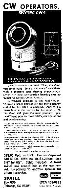
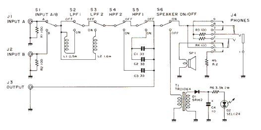
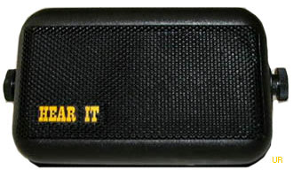
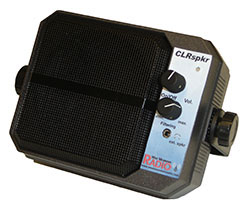
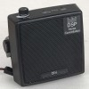
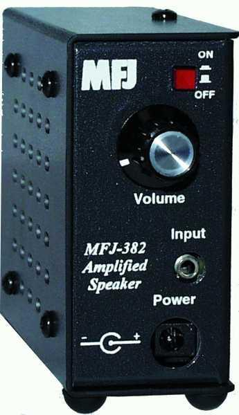
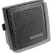

<img> as data-original-src.
Contents: Safe Mounting Of Speakers; Basics; DSP Speakers; Non-DSP Powered Speakers; Plain Old Speakers;
There is a reason this section is first, and that reason is safety! Mounting speakers anywhere near one's head is fraught with serious issues, almost no one thinks about. For example, one popular mounting location utilizes the headrest support posts, which places them within side airbag reach. Further, head rests are designed to snap off in certain collision events, and speaker mounting interferes with this function.
Secondly, sound pressure levels can be deceiving especially in a noisy environment like the interior of vehicle. And, contrary to popular belief, it isn't just the low frequencies which can be damaging to one's hearing. The high frequency hash we all put up with when listening to weak SSB signals is just as annoying, and deaf-producing! Here's a little experiment you can carry out on your own. No matter where your speaker is mounted, after about 10 minutes of listening, just turn off the radio. If you suddenly feel like you're in an insulated sound proof booth, chances are your speaker volume setting is too high!
Here (and hear) is a suggestion to minimize the hash. Place the speaker under the front driver's seat, pointing upward. This tends to increase the bass response while muffling the high-frequency hash. Up under the dashboard pointing into the foot well works almost as good. Either way, you'll end up using less audio gain, which is a good thing in more ways than one!
Incidentally, the same hearing issues (high frequency hash primarily) are present when using a vehicle stereo system as a communications speaker. Irrespective of any equalizer controls, both low and high frequency response cannot be tailored narrow enough for communications use. It is a stopgap solution at best!


Unlike the aforementioned CW filter, all of these designs used a combination of inductors and capacitors typically built into a station speaker. The schematic at left is that of the Icom SP-20 (click on it for a larger view). Note the switches to select the desired mode; lowpass, highpass, or both. Also note the passive elements are in series with the speaker for good reason; you have to be careful using directly shunted elements with single-ended audio amplifiers, as doing so can cause them to fail.
The biggest drawback to passive filters is their insertion loss (3 to 5 dB depending on the design), so if your mobile transceiver is already lacking in the audio out department, a DSP and/or powered speaker is better choice.
Both IF and AF based Digital Signal Processors (DSP) have become a mainstay of every currently-available mobile transceiver. Some a very good at reducing perceived noise, some are so-so, and a few nearly worthless. This has spawned a variety of companies to introduce DSP-equipped, powered speakers.

The Hear It® unit (shown at right) is a popular DSP speaker. It is marketed by GAP, and sports a wide range of DSP settings. It sells for about $200, replete with a headphone jack and fused power cord.


If you need a bit more audio power, BHI in England makes the DSPKR with 10 watts of power which should go a long ways in noisy environments. Incidentally, BHI makes most of the private-labeled DSP speakers sold in the US.
There is no argument about their usefulness of DSP speakers, as long as you don't mind the additional level of complexity. They do require DC power which must be switched on and off, and they must be positioned to allow operation of their controls.
By the way, using the accessory jack to power external DSP speakers isn't a good idea. The limiting factor isn't necessarily the current rating (typically one amp). Rather, it is the voltage drop through the radio—as much as 2 volts in some cases. This can cause some powered speakers to operate erratically.


The audio output in modern transceivers seldom tops 3 watts, which is barely adequate especially in a noisy mobile environment. Fortunately, there are several companies making amplified speakers these days, including the MFJ-382 shown at right. It sells for under $40. Midland®, Cobra®, and Shakespeare® also offer amplified speakers for about the same price.Occasionally, you'll find old Motorola HSN1000B amplified speakers at hamfests for as little as $10. New ones cost about $75. It's amazing how good they are as long as the speaker cone hasn't deteriorated—Caveat Emptor.
There is nothing wrong with plain old speakers. However, there are a few things to consider when selecting one.
First, price means nothing. Some really cheap speakers will out perform ones costing 10 times as much. One of the reasons for this is. Expensive speakers tend to have a much wider bandwidth (high frequencies especially) than cheaper ones, and they're typically larger in size. While they might sound a little fuller at home, when you're mobile you need all of the definition you can get. Conversely, you don't want one too small or you won't have enough bass response, and the highs will be accented which reduces readability.
Because each person's hearing is slightly different, you should attempt to try before you buy (always a good idea!). Just don't buy one smaller than 3 x 5 inches. Those tiny 2 inch jobs don't sound very good unless you mount them very close to your ear—something you shouldn't do!
{kind=link}
{kind=link}
{kind=link}
{kind=link}